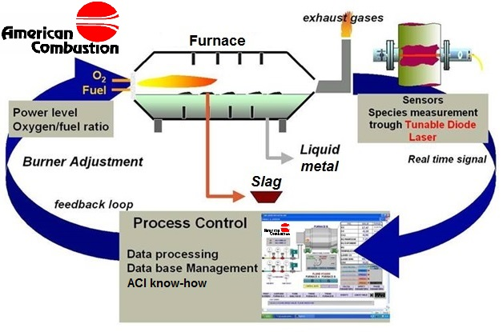

ALARC™-TDL allows optimization of furnace operations by analyzing the off-gas composition. By measuring the CO and CO2, it is possible to optimize consumption of oxygen, fuel and carbon. Typical burner systems and oxygen injection technologies operate using recipes. If furnace conditions change, there is no feed-back and fuel and/or oxygen could be introduced into the furnace without any benefits.
ALARC™-TDL reduces operating costs per ton and maximizes production by monitoring and optimally controlling the flow of gasses to the different burners/injectors.
During scrap melt in, CO and CO2 readings are used by ACI to optimize natural gas, oxygen, and injection carbon rates. By optimizing the gases during the whole process, typically gas savings are achieved and/or production increase is established. The overall goal is a decrease in production cost per ton.
